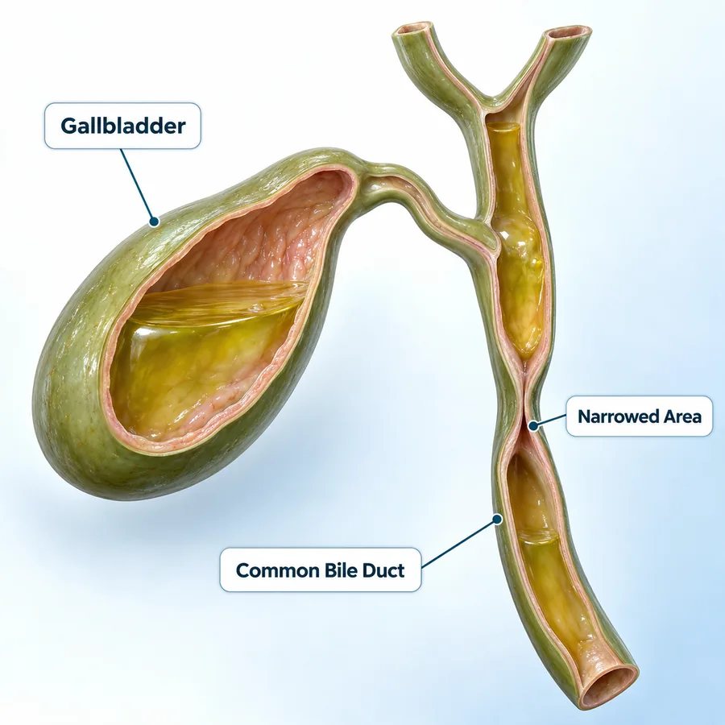
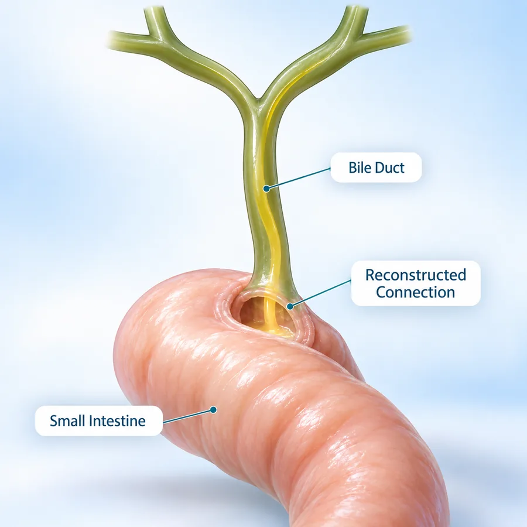
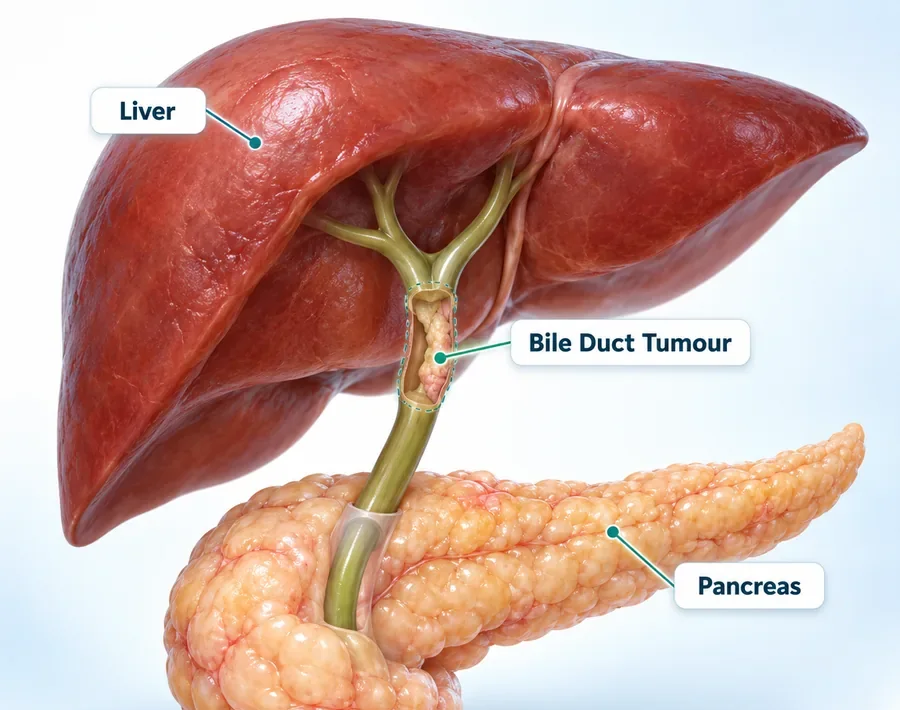
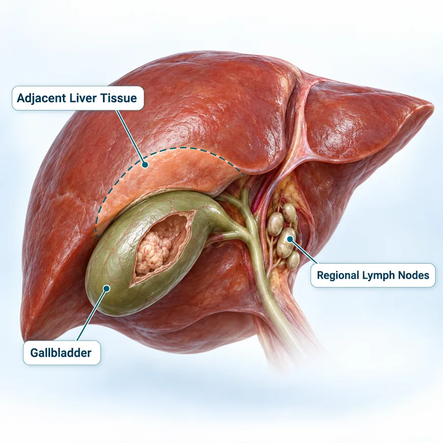
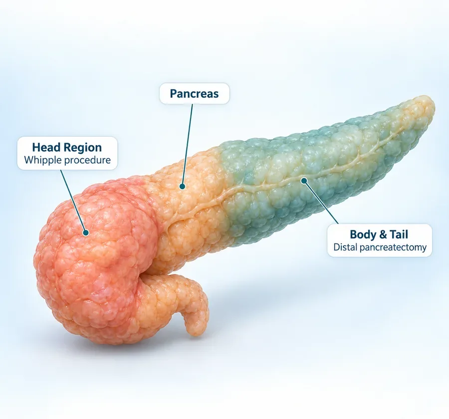

International Travelling Fellowship (SEF)
Minimal access pancreatic surgery under the mentorship of Prof. Yuichi Nagakawa
Focus Area Robotic Pancreatic Surgery16Years of
Experience
Dr. Deeksha Kapoor
Dr. B. Ramamurthi National Gold Medal
DNB General Surgery — Batch of June 2014
Awarded for securing the highest marks nationally in the Diplomate of National Board examinations, marking a benchmark of academic and surgical excellence.
Advitya Healthcares · Kolkata & Baruipur
Already diagnosed, or told you need surgery? Get a second opinion from Dr. Deeksha Kapoor before you decide.
KolkataBaruipur
Consultation venue and timings confirmed at the time of booking
WhatsApp UsBiliary surgery treats disease of the bile ducts and gallbladder — the channels that carry bile from the liver to the intestine. It is delivered at Advitya Healthcares within a hepato-pancreato-biliary (HPB) surgical practice experienced in complex abdominal disease, with consultations available in Kolkata and Baruipur. Routine gallstone surgery has a page of its own.
Your blood tests, scans, any ERCP or drainage already done, previous surgery and overall health are all considered before a plan is made. Whether an operation is needed at all, which part of the biliary tree it involves, and whether an open or minimally invasive approach is suitable, is decided after assessment and, where the condition is a cancer, through multidisciplinary review.
The surgical team is led by Dr. Deeksha Kapoor, a surgical gastroenterologist and HPB & GI surgical oncologist. She trained in surgical gastroenterology at Medanta – The Medicity, completed an HPB & GI Surgical Oncology Fellowship at Tata Memorial Hospital, Mumbai, is console-trained in robotic surgery on the Da Vinci Xi platform, and has pursued advanced HPB training in Japan, Germany and France. She leads the PancreaCare initiative at Advitya Healthcares.
Before surgery you are told what the operation involves, which part of the bile duct is affected, whether bile needs to be drained first, and what recovery looks like. After surgery you receive specific advice on diet, activity, wound and drain care, follow-up blood tests and scans. Jaundice with high fever and shivering, confusion, severe abdominal pain or persistent vomiting needs emergency assessment the same day.
Surgical Gastroenterologist · HPB & GI Surgical Oncologist · CEO & Medical Head, Advitya Healthcares
Trained at the centres patients usually travel to Mumbai or Delhi for — and operating in Kolkata and Baruipur, so complex surgery does not have to mean leaving home.
Gained knowledge and achieved academic excellence at esteemed institutions
Aligned with global best practices through focused mentorships at world-renowned centers
Minimal access pancreatic surgery under the mentorship of Prof. Yuichi Nagakawa
Focus Area Robotic Pancreatic SurgeryDepartment of Pancreato-Biliary Surgery, Japanese Foundation of Cancer Research under the mentorship of Prof. Yosuke Inoue
Focus Area Surgery for Locally Advanced Pancreatic CancerDepartment of General Visceral & Transplant Surgery, University of Heidelberg under the mentorship(s) of Prof. Markus Buechler & Prof. Thilo Hackert
Focus Area Vascular Resections in Pancreatic SurgeryDepartment of HPB & Transplant Surgery, Beaujon Hospital under the mentorship(s) of Prof. Alain Sauvanet & Prof. Mickael Lesurtel
Focus Area Laparoscopic Pancreatic Surgery & Vascular ResectionsUnder the PancreaCare initiative, surgeons, medical oncologists and radiologists review complex cases together, so the plan, the operation and the recovery have more than one specialist watching over them.
Most symptoms come from bile that cannot drain. Recognising them early helps you seek timely evaluation.
Yellowing of the eyes and skin when bile backs up into the blood instead of draining into the intestine.
Itching all over the body, often worse at night, caused by bile salts building up in the blood.
Tea-coloured urine and pale or clay-coloured stools are signs that bile is not reaching the intestine.
Pain in the upper right abdomen, sometimes spreading to the back or shoulder, often after meals when stones are the cause.
Fever and shivering with jaundice can mean infection in a blocked bile duct, which needs urgent treatment.
Unexplained weight loss, particularly with painless jaundice, needs prompt evaluation for a tumour.
Jaundice with high fever and shivering, confusion or drowsiness, severe abdominal pain or persistent vomiting can mean an infected, blocked bile duct and requires same-day medical assessment.
Call +91 92112 21551
The biliary system is the network of ducts that carries bile from the liver to the intestine, with the gallbladder storing it on the way. Biliary surgery treats disease that blocks, narrows or damages these ducts.
Bile made in the liver drains through the right and left hepatic ducts, which join to form the common hepatic duct. The gallbladder joins it through the cystic duct, forming the common bile duct, which runs behind the pancreas and empties into the duodenum at the ampulla of Vater, alongside the pancreatic duct.
Stones can slip from the gallbladder into the bile duct, the duct can narrow after injury or inflammation, cysts can be present from birth, and tumours can arise in the bile duct, the gallbladder or the ampulla. Each of these can stop bile from draining.
The bile ducts are only a few millimetres wide and run directly beside the hepatic artery and the portal vein. Repairs and reconstructions need precise technique and are planned on detailed imaging such as MRCP.
Many blockages are first relieved by ERCP or a drainage tube. Whether an operation is needed afterwards, and which one, depends on the cause, the level of the blockage and your general health.
Treatment should be planned on blood tests, imaging such as ultrasound, MRCP and CT and, where the condition is a cancer, multidisciplinary review of your individual case.
Conditions of the bile ducts and gallbladder treated by the surgical team, and the operations used for them.

Stones that have moved into the common bile duct. Most are cleared by ERCP; bile duct exploration is used when they cannot be, usually with removal of the gallbladder.
Discuss with our team
Narrowing of the bile duct after injury during gallbladder surgery, inflammation or chronic pancreatitis, repaired by reconnecting the duct to the small intestine.
Discuss with our team
Cystic widening of the bile duct, usually present from birth. The cyst is removed because of its infection and cancer risk, and bile drainage is reconstructed.
Discuss with our team
Cholangiocarcinoma of the bile ducts. Surgery removes the affected duct with its lymph nodes and, for tumours near the liver, part of the liver.
Discuss with our team
Radical cholecystectomy — removal of the gallbladder with the adjacent liver tissue and lymph nodes, and sometimes the bile duct.
Discuss with our team
Tumours where the bile duct meets the duodenum, which often cause jaundice early. They are treated with a Whipple procedure (pancreaticoduodenectomy).
Discuss with our teamSuitability for any biliary procedure is confirmed after imaging, blood tests and, for cancers, multidisciplinary review.
The operation depends on the cause of the problem and where in the biliary tree it sits.
The common bile duct is opened, laparoscopically or through an open incision, and the stones inside it are removed, usually in the same operation as removal of the gallbladder.
A Roux-en-Y hepaticojejunostomy joins the bile duct directly to a loop of small intestine, so that bile bypasses a narrowed, injured or removed segment of the duct.
The abnormal segment of bile duct is removed completely, together with the gallbladder, and bile drainage is restored with a hepaticojejunostomy.
For bile duct cancer, the affected duct is removed with the nearby lymph nodes and, for tumours near the liver, part of the liver. Tumours of the lower duct are treated with a Whipple procedure.
Many patients first have bile drained by an ERCP stent or a percutaneous tube (PTBD) to relieve jaundice or infection. Whether, when and which operation follows is decided after clinical evaluation.
Specialist care with a patient-first approach.
Biliary surgery led by a surgeon trained in surgical gastroenterology and HPB & GI surgical oncology at high-volume centres.
Repair of bile duct injuries and strictures, and hepaticojejunostomy after cyst or tumour removal.
Ultrasound, MRCP and CT reviewed together, with ERCP and drainage coordinated when bile needs to be relieved first.
Treatment is planned according to the cause, the level of the blockage and your individual clinical situation.
Surgeons, gastroenterologists, radiologists and oncologists review bile duct and gallbladder cancers together.
Clear communication before surgery, during recovery and throughout follow-up, in Kolkata and Baruipur.
Symptoms, medical history and previous surgery are reviewed.
Blood tests, ultrasound, MRCP and CT as required.
ERCP or a drainage tube relieves jaundice or infection first.
The operation, its timing and the approach are decided with you.
The planned biliary procedure, open or minimally invasive.
Liver function tests, drain care and follow-up imaging.
Major surgery means a hospital stay of several days. This is how health insurance works at Advitya, so cost is not left as a guess.
Where your insurance company or TPA is accepted by the hospital, the covered amount is settled directly with them after approval. Charges your policy does not cover are paid by the patient.
Tell the hospital at admission that you have health insurance. A pre-authorisation request is sent to your insurer or TPA, and the covered amount is settled once they approve it.
Advitya Hospital Baruipur, with an ICU offering critical care and ventilator support, and 24×7 emergency cover. Consultations are also held at Advitya Kolkata — PancreaCare.
Check your policy before admission. The list of accepted insurance companies and TPA partners will be published once confirmed. To check yours now, call the hospital desk.
Call +91 92112 21552Consultation, treatment and follow-up organised around the patient.
Biliary care delivered by a specialist HPB surgical team.
Consultation, theatre, imaging and endoscopy facilities used for planned surgery.
Time to discuss your scans, reports, treatment options and recovery.
Consultations available in Kolkata and Baruipur.
General information only. Advice for your own condition comes from your consultation.
Biliary surgery covers operations on the bile ducts and gallbladder — the system that carries bile from the liver to the intestine. It includes removing stones from the bile duct, repairing strictures and injuries, removing choledochal cysts, and surgery for bile duct cancer, gallbladder cancer and ampullary tumours.
Often, yes. Most bile duct stones are removed by ERCP, an endoscopic procedure done through the mouth. Surgery to explore the bile duct is used when stones cannot be cleared that way, and the gallbladder is usually removed as well so that new stones do not follow.
A hepaticojejunostomy joins the bile duct directly to a loop of the small intestine, so that bile can bypass a narrowed, injured or removed part of the duct. It is the standard reconstruction after bile duct injuries, benign strictures, choledochal cyst excision and many bile duct cancer operations.
The injury is assessed with blood tests and imaging such as MRCP. Small leaks are often treated with an ERCP stent and drainage. Major injuries usually need surgical reconstruction, and the timing depends on infection and inflammation around the duct. Early referral to a specialist HPB team gives the best chance of a good repair.
A choledochal cyst can cause repeated infection, stones and pancreatitis, and it carries a long-term risk of cancer in the cyst wall. Complete removal of the abnormal duct, with reconstruction of bile drainage, is usually recommended.
No. Bile duct stones and strictures are common causes of jaundice. However, jaundice without pain, particularly with weight loss, needs prompt evaluation because it can be the first sign of a tumour of the bile duct, gallbladder, ampulla or pancreas.
Recovery depends on the operation. Bile duct exploration may need a few days in hospital, while reconstruction or cancer surgery involving the liver usually means a longer stay and several weeks of recovery at home. Your surgical team gives specific advice on diet, activity, wound care and follow-up before discharge.
Jaundice with high fever and shivering, confusion or drowsiness, severe abdominal pain or persistent vomiting can mean an infected, blocked bile duct (cholangitis), which can become serious quickly. Go to your nearest emergency department the same day.
Consult our experienced surgical team for evaluation and personalized treatment planning.
Six fields, nothing clinical. We will call you back to confirm.